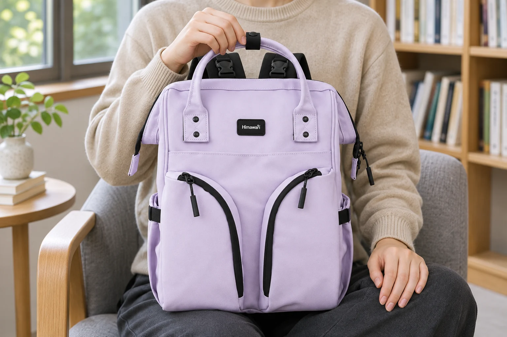
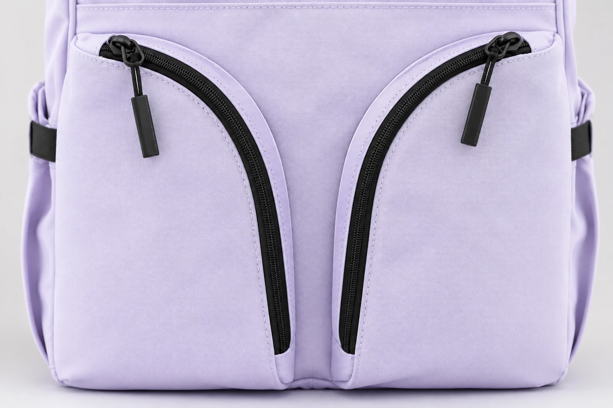
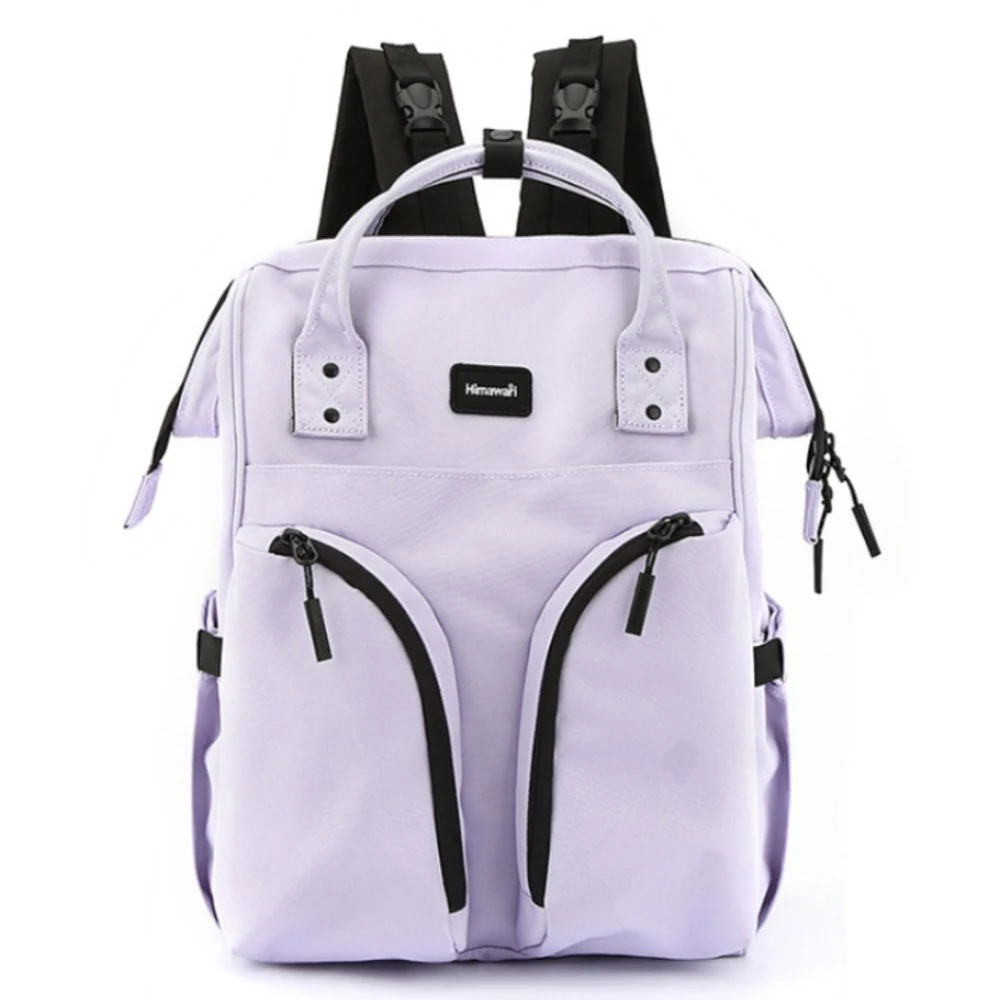

백팩 앞 포켓의 긴 지퍼는 어디까지 열면 좋을까

벤치에 앉아 백팩에서 작은 물건 하나를 꺼낸다고 해보죠. 손잡이를 쥔 채 앞 포켓 지퍼를 조금 열었는데 안쪽에 손끝만 들어갑니다. 이번엔 끝까지 열었더니 포켓 앞쪽이 움직여서 지퍼를 다시 잡기가 어렵습니다. 평소 쓰는 작은 물건을 앞 포켓에 넣어 둔 경우라면 지퍼를 위쪽만 열었을 때, 곡선까지 내렸을 때, 아래쪽까지 내렸을 때를 비교해 보세요. 손끝이 물건에 닿는 것과 물건을 쥔 손이 빠져나오는 건 별개입니다.
히마와리 No.1208 라이트퍼플의 앞면에는 검은 지퍼 두 줄이 있습니다. 두 지퍼 모두 바깥쪽 위에서 시작해 가운데로 휘면서 포켓 아래쪽 가까이까지 내려옵니다. 제조사 카탈로그에 적힌 가방 외부 크기는 가로 29cm, 세로 40cm, 폭 17cm입니다. 이 치수만으로는 앞 포켓의 깊이나 입구 폭을 알 수 없습니다. 바닥을 받칠 곳이 있는지, 물건이 입구에서 얼마나 떨어져 있는지에 따라서도 손이 편하게 드나드는 지퍼 위치가 달라집니다.
서 있을 때는 손끝에 물건이 닿는지 먼저 봅니다
서 있을 때는 가방을 몸 앞에 두고 한 손으로 위 손잡이를 잡을 수 있습니다. 다른 손으로 필요한 포켓만 조금 열어보세요. 입구 가까이에 있는 물건을 손끝으로 집어 그대로 뺄 수 있으면 거기까지만 열어도 됩니다. 손가락은 닿는데 물건을 쥔 손이 걸린다면, 손을 한 번 빼고 지퍼를 조금 더 내려보세요. 물건을 쥔 채 손을 비틀어 빼면 포켓도 함께 딸려옵니다. 손이 편하게 나올 만큼 열어 두면 포켓을 잡아당길 일이 줄어듭니다.
입구만 열어서 물건을 찾을 수 있을지는 포켓 안에서 물건이 어떻게 움직이느냐에 달려 있습니다. 얇은 물건도 안쪽으로 눕거나 다른 물건 뒤로 들어가면 손끝에 닿지 않을 수 있습니다. 손잡이를 잡고 가방을 세워 든 채 몇 번 더 손을 넣어 봐도 같은 자리만 더듬는다면 내려놓을 곳부터 찾는 편이 편합니다. 포켓 아래까지 지퍼를 내릴 수 있는 구조라면 더 열기 전에 가방이 앞으로 기울지 않는지도 살펴야 합니다.
바닥을 받치면 지퍼의 곡선을 따라 열기 쉽습니다
위쪽만 열었을 때 물건이 보이는데 쥔 손이 걸린다면 곡선 구간에서 한 번 멈춰 보세요. 포켓을 끝까지 열기 전에 손이 나올 틈이 생겼는지 볼 수 있습니다. 앉을 곳이 있다면 가방을 무릎 위에 세우고 포켓 면을 살짝 위로 향하게 둡니다. 바닥이 흔들리지 않을 때 한 손으로 물건이 든 쪽을 가볍게 받치고 다른 손으로 지퍼를 움직이면 됩니다. 손이 드나들 만큼 벌어지면 거기서 멈춰도 됩니다.
지퍼가 휘는 곳에서는 손목을 돌려 당기는 방향을 바꿉니다. 한 방향으로 계속 당기면 포켓 원단이 딸려 올라올 수 있습니다. 지퍼 손잡이가 걸리는 느낌이 들면 멈추세요. 지퍼 옆 원단이 접혔는지, 포켓 속 물건이 지퍼 가까이 밀려왔는지 봅니다. 한 손으로 포켓 겉면을 조금 펴고 지퍼가 움직일 여유를 만든 뒤 다시 확인하세요. 손잡이가 계속 걸리면 멈춘 채 원단과 내용물의 위치를 다시 보세요.

물건을 꺼낼 때 포켓의 아래쪽도 받칩니다
포켓 안쪽에 누운 물건은 곡선까지 열어도 손끝에 닿지 않을 수 있습니다. 지퍼를 아래까지 내리면 위쪽만 열었을 때보다 입구 아래쪽을 살피기 쉽습니다. 포켓 겉면이 앞으로 얼마나 벌어질지는 내용물과 가방을 놓는 각도에 따라 달라집니다. 가방을 세운 채 깊숙한 물건을 빼야 한다면 지퍼를 더 내리기 전에 손바닥을 포켓 아래에 대보세요. 포켓 속 물건이 함께 움직여도 어느 쪽에 있는지 살피면서 열 수 있습니다. 테이블에 가방을 눕혀 포켓을 위로 두는 방법도 있습니다. 이때는 포켓 아래를 손으로 받치지 않아도 돼서 안을 보며 물건을 정리하기 편합니다.
지퍼가 나란히 있으면 두 포켓을 다 열고 찾고 싶을 때가 있습니다. 어디에 넣었는지 기억이 안 나면 한쪽을 먼저 열고 안을 살펴보세요. 가방을 돌리는 사이에 열린 포켓 안의 물건이 움직일 수 있으니 그쪽을 닫고 다음 포켓을 엽니다. 자주 꺼내는 물건은 포켓에 넣었을 때 보통 어느 쪽으로 눕는지 한 번 봅니다. 가방을 들었다가 다시 내려놓아도 물건이 입구 가까이에 있는지 보면 다음에 지퍼를 얼마나 열어야 할지 가늠할 수 있습니다.

지퍼를 닫을 때는 물건과 원단이 물러났는지 확인합니다
물건을 빼고 나면 포켓에 남은 내용물이 입구로 밀려 나오지 않았는지 확인합니다. 끝이 딱딱한 물건이나 접힌 포장지가 지퍼 길을 가로막고 있다면 포켓 안쪽으로 옮기세요. 입구 양쪽 원단을 조금 모아 지퍼를 올리다가 곡선에서 포켓 천이 따라 올라오면 손잡이를 멈추고 천부터 정리하세요. 다 올린 뒤에는 손잡이 아래 지퍼가 맞물렸는지 봅니다.
자주 쓰는 물건의 자리를 정할 때는 평소 어디에 가방을 내려놓는지 떠올려 보세요. 현관에서 가방을 세워 둔 채 물건을 꺼낼 때와 카페 테이블에 눕혀 놓을 때는 손을 쓰는 방식이 다릅니다. 가방을 들고 있다가 급히 꺼내야 할 물건은 입구 가까이에서 집을 수 있어야 편합니다. 내려놓고 여유 있게 찾는 물건은 포켓 안을 보고 꺼낼 수 있습니다. 쓰는 물건을 넣은 채 가방을 한 번 들어 봤다가 내려놓으면 위쪽과 곡선, 아래쪽 가운데 어디까지 열어야 물건을 쥔 손이 편하게 빠질지 가늠할 수 있습니다.